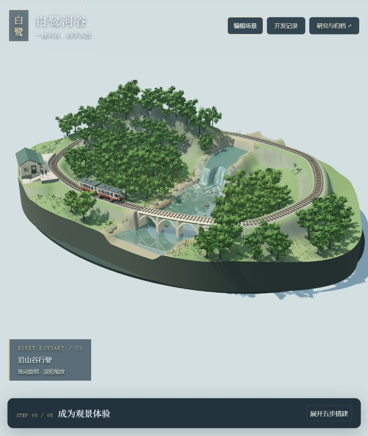
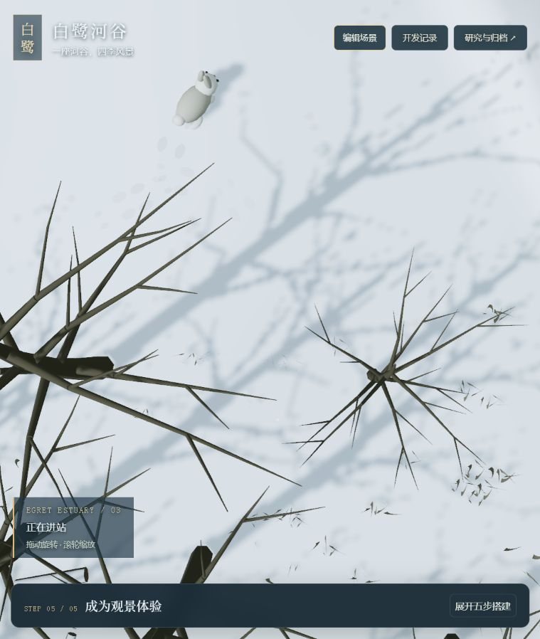
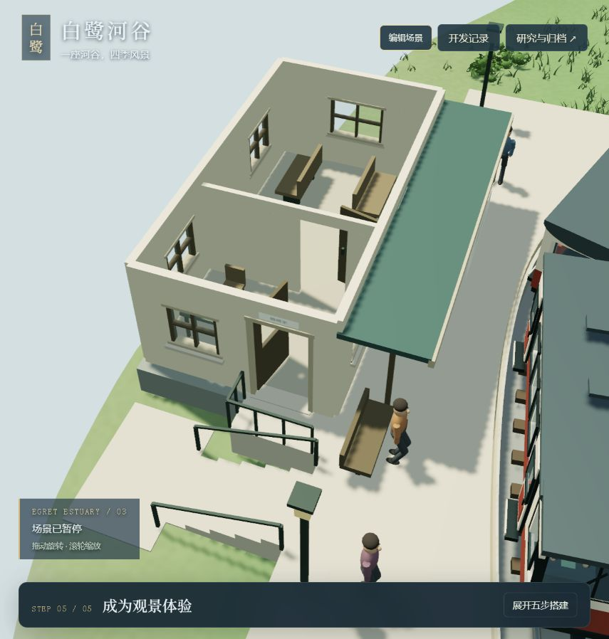

V38 包含地形与三种构图、春夏秋冬、风与植被、三种水流、列车司机、站房室内、人物上下客、鸟鱼鸭、蝴蝶、冬季兔子及落脚雪印。声音默认关闭，可手动开启环境音和 MiniMax 生成的到站播报。
01 · 先看整个河谷

拖动旋转，滚轮缩放。打开“编辑场景”，依次查看四季和三种构图。全景用于判断山林、水面、铁路与建筑是否协调。
02 · 冬季的活动与痕迹

动物与栖息地 → 近看冬季兔子与脚印。兔子停留、转身、短跳，脚印逐渐淡去；镜头只展示其中一处活动区。
03 · 车站怎样生活

车站生活 → 查看候车室与值班室，或演示到站上下客。声音需在“天气、列车与镜头”中手动开启。室内进出和办票尚未实现。